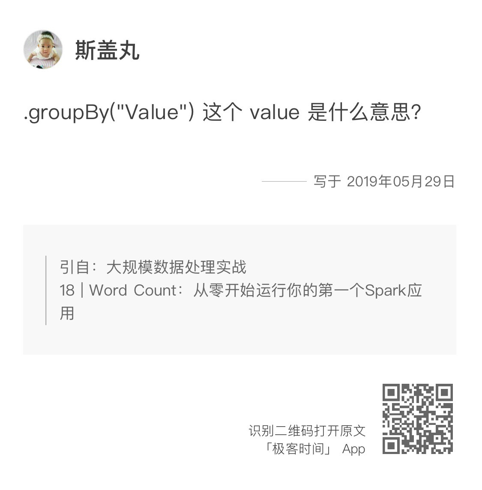
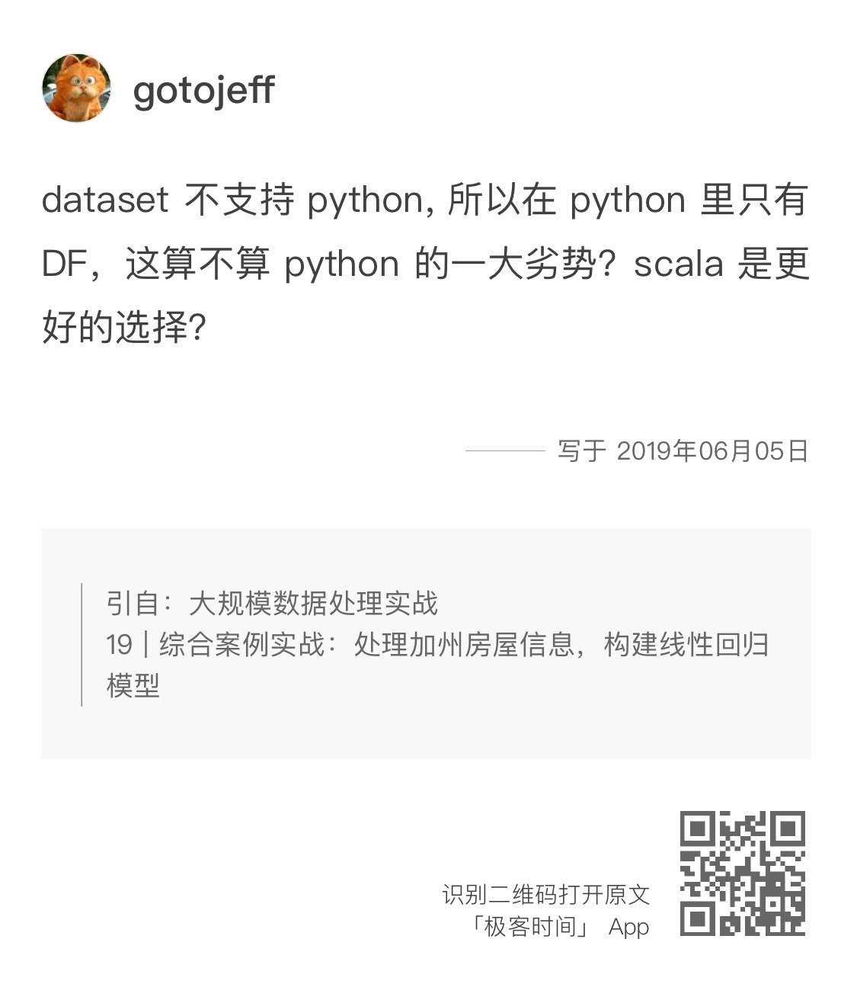
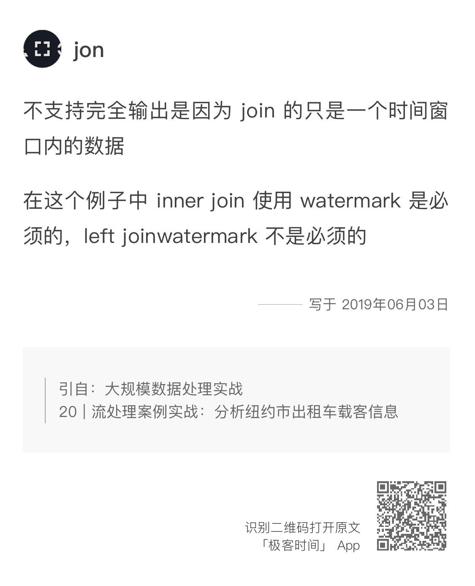
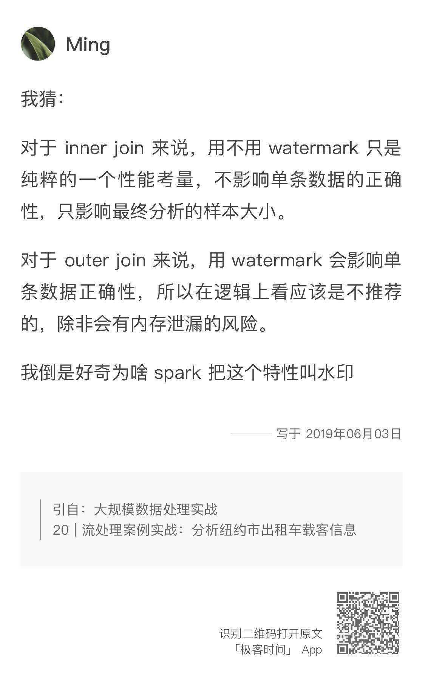
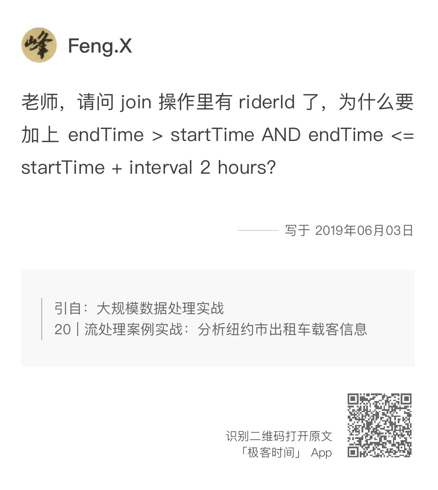
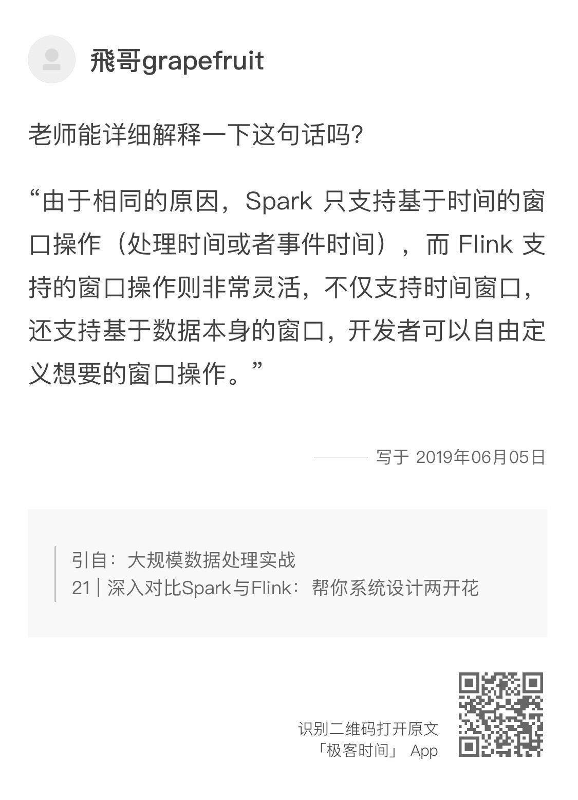

- 00 开篇词 从这里开始，带你走上硅谷一线系统架构师之路.md.html
- 01 为什么MapReduce会被硅谷一线公司淘汰？.md.html
- 02 MapReduce后谁主沉浮：怎样设计下一代数据处理技术？.md.html
- 03 大规模数据处理初体验：怎样实现大型电商热销榜？.md.html
- 04 分布式系统（上）：学会用服务等级协议SLA来评估你的系统.md.html
- 05 分布式系统（下）：架构师不得不知的三大指标.md.html
- 06 如何区分批处理还是流处理？.md.html
- 07 Workflow设计模式：让你在大规模数据世界中君临天下.md.html
- 08 发布_订阅模式：流处理架构中的瑞士军刀.md.html
- 09 CAP定理：三选二，架构师必须学会的取舍.md.html
- 10 Lambda架构：Twitter亿级实时数据分析架构背后的倚天剑.md.html
- 11 Kappa架构：利用Kafka锻造的屠龙刀.md.html
- 12 我们为什么需要Spark？.md.html
- 13 弹性分布式数据集：Spark大厦的地基（上）.md.html
- 14 弹性分布式数据集：Spark大厦的地基（下）.md.html
- 15 Spark SQL：Spark数据查询的利器.md.html
- 16 Spark Streaming：Spark的实时流计算API.md.html
- 17 Structured Streaming：如何用DataFrame API进行实时数据分析_.md.html
- 18 Word Count：从零开始运行你的第一个Spark应用.md.html
- 19 综合案例实战：处理加州房屋信息，构建线性回归模型.md.html
- 20 流处理案例实战：分析纽约市出租车载客信息.md.html
- 21 深入对比Spark与Flink：帮你系统设计两开花.md.html
- 22 Apache Beam的前世今生.md.html
- 23 站在Google的肩膀上学习Beam编程模型.md.html
- 24 PCollection：为什么Beam要如此抽象封装数据？.md.html
- 25 Transform：Beam数据转换操作的抽象方法.md.html
- 26 Pipeline：Beam如何抽象多步骤的数据流水线？.md.html
- 27 Pipeline I_O_ Beam数据中转的设计模式.md.html
- 28 如何设计创建好一个Beam Pipeline？.md.html
- 29 如何测试Beam Pipeline？.md.html
- 30 Apache Beam实战冲刺：Beam如何run everywhere_.md.html
- 31 WordCount Beam Pipeline实战.md.html
- 32 Beam Window：打通流处理的任督二脉.md.html
- 33 横看成岭侧成峰：再战Streaming WordCount.md.html
- 34 Amazon热销榜Beam Pipeline实战.md.html
- 35 Facebook游戏实时流处理Beam Pipeline实战（上）.md.html
- 36 Facebook游戏实时流处理Beam Pipeline实战（下）.md.html
- 37 5G时代，如何处理超大规模物联网数据.md.html
- 38 大规模数据处理在深度学习中如何应用？.md.html
- 39 从SQL到Streaming SQL：突破静态数据查询的次元.md.html
- 40 大规模数据处理未来之路.md.html
- FAQ第一期 学习大规模数据处理需要什么基础？.md.html
- FAQ第三期 Apache Beam基础答疑.md.html
- FAQ第二期 Spark案例实战答疑.md.html
- 加油站 Practice makes perfect！.md.html
- 结束语 世间所有的相遇，都是久别重逢.md.html
- 捐赠
FAQ第二期 Spark案例实战答疑
你好，我是蔡元楠。
这里是第二期答疑，上周我们结束了Spark部分的内容，时隔一周，我们的Spark案例实战答疑终于上线了。
通过10讲的Spark学习，相信你已经对Spark的基本特性有了深入的了解，也基本掌握了如何使用各类常用API，如RDD、DataSet/DataFrame、Spark Streaming和Structured Streaming。今天我将针对模块三中提出的一些共性留言做一个集中答疑。
我首先要为积极留言的同学们点个赞，感谢同学们亲自动手实践，有的同学还通过查阅官方API文档的形式找出了正确的实现方式，这非常值得鼓励。
第18讲
在第18讲中，kylin同学留言问到，为什么用我们通篇用的是DataFrame API而不是DataSet。这是因为PySpark的SQL库只有DataFrame，并没有DataSet。不过在Scala和Java中，DataSet已经成为了统一的SQL入口。

斯盖丸同学问道，第18讲代码中groupBy(‘value’)中value是什么意思？
这里我说一下，SparkSession.read.text()读取文件后生成的DataFrame只有一列，它的默认名字就是“value”。
在第18讲的代码中，我们用lines.value去读取这一列，是同样的道理。之后我们给新的列重命名为”word”，所以groupBy的参数变成了”word”。如果你印象不深了，可以返回去查看一下。
讲到这里，我要为Jerry同学点个赞。在开篇词中我就提到过，我希望你可以建立自己的批判性思维，不要盲目听从任何人的意见。除了认真实践，像Jerry一样通过查阅官方文档找到了正确的实现方式，做的真的很棒，希望可以在工作中也把这份批判性思维和独立学习的能力保持下去。
你可以发现，在第18讲中，我介绍的explode和split方法在官方文档中都有详细的讲解，这些内容并没有很大的难点，通过自己阅读官方文档都可以学会。官方文档中还有很多我没有提到的用法，在仅仅10讲的篇幅中我不能把Spark的每一个用法都教给你。我能做的，只是从源头出发，分析新的技术、新的API产生的原因，教会你思考的方式，并结合例子，让你体会一下如何在真实场景中利用这些技术，而不是照本宣科地把官方文档复述一遍。
学习新的技术跟上学时背单词不一样，我们要做的是在最短时间内掌握核心内容和设计的理念，至于具体的用法，完全可以在用到的时候查阅官方文档。
第19讲

第19讲中，gotojeff提出的这个语言选择问题，其实我之前就提到过，PySpark现在不支持DataSet，只有Scala和Java支持。这是由语言特性决定的，Python是动态类型的语言，而DataSet是强类型的，要求在编译时检测类型安全。所以，在所有用Python的代码例子中，我用的都是DataFrame。
大部分人都同意在Spark中，Scala和Python是优于Java和R的。至于在Spark生态中，Scala和Python孰优孰劣，这是个很主观的问题，我们不能只因为不支持DataSet这一点就说Python比Scala差。
Scala确实很优秀，Spark原生的实现就是用Scala写的，所以任何新发布的功能肯定支持Scala，官方文档也都是用Scala来举例子。而且Scala的性能要优于Python。但是Python也有很多优点，比如容易学习、应用场景广。这两种语言在Spark的世界中都可以满足我们绝大多数的需求，选择任何一个都不是错误的。
第20讲
第20讲的思考题是，为什么流的Inner-Join不支持完全输出模式？对于Inner-Join而言，加水印是否是必须的？ Outer-Join呢？


这里，我节选了never leave、jon、Ming的留言，里面是他们对这个思考题的回答，不知道你是不是也进行了深入的思考？那么现在，让我也来分享一下我的看法吧。
首先，现阶段不仅Inner-join不支持完全输出模式，任何类型的Join都不支持完全输出模式。
这是因为完全输出模式要求每当有新数据输入时，输出完整的结果表。而对于无边界数据，我们很难把所有历史数据存在内存中。所以，一般Join的都是在某个时间窗口内的流数据，这就是引入watermarking的原因。希望将来Spark可以引入新的机制来支持这一点。
其次，我们都知道Outer join是要在Inner Join的基础上，把没有匹配的行的对应列设为NULL。但是由于流数据的无边界性，Spark永远无法知道在未来会不会找到匹配的数据。所以，为了保证Outer Join的正确性，加水印是必须的。这样Spark的执行引擎只要在水印的有效期内没找到与之匹配的数据，就可以把对应的列设为NULL并输出。
那么Inner Join呢？由于Inner Join不需要连接两个表中所有的行，所以在Spark官网的叙述中，水印和事件时间的限制不是必须的。但是如果不加任何限制，流数据会不断被读入内存，这样无疑是不安全的。所以，我推荐你即便是Inner Join也要加水印和事件时间的限制。

Feng.X同学不是很理解实例中两个Streaming DataFrame Join时，为什么要加上事件时间的限制“endTime > startTime AND endTime <= startTime + interval 2 hours”。
事实上，这个限制会抛弃任何长于2个小时的出租车出行数据。确实，对于这个例子来说，这样一个对事件时间的限制并不是必须的。加入它其实是为了告诉你，在基于事件时间来join两个流时，我们一般不考虑时间跨度过大的情况，因为它们没有普遍意义，还会影响数据分析的结果。
举个例子吧，对于一个网页广告来说，我们需要知道用户看到一个广告后要多长时间才会去点击它，从而评估广告的效果。
这里显然有两个流：一个代表用户看到广告的事件，另一个代表用户点击广告的事件。尽管我们可以通过用户的ID来Join这两个流，但是我们需要加一个限制，就是点击广告的时间不能比看到广告的时间晚太久，否则Join的结果很可能是不准确的。比如，用户可能在1:00和2:00都看到了广告，但是只在2:01点击了它，我们应该把2:00和2:01Join起来，而不应该Join1:00和2:01，因为1:00看到的广告并没有促使他点击。
第21讲
第21讲的思考题是，除了高延迟的流处理这一缺点外，你认为Spark还有什么不足？可以怎样改进？
我们都知道，Spark并不是一个完美的数据处理框架，它的优点明显，也同样有不少不足之处。
- 在数据规模很大的场景中，靠内存处理的开销很大。如果内存不够把中间结果写入硬盘的话，又会影响处理速度；
- Spark没有自己的文件管理系统，它对HDFS或者其他的文件系统依赖很强；
- 在流处理中，只支持基于时间的窗口，而不支持其他种类的窗口，比如基于数据个数的窗口。
正是由于Spark还有诸多不足，所以众多开源的贡献者才会持续对Spark做改进，Spark也在不断发布新版本。此外，很多新的数据处理框架的发明也是为了从根本上解决Spark存在的问题，比如Flink，还有我们正在学习的Apache Beam。

这位飞哥grapefruit不太明白Flink支持基于数据本身窗口是什么意思，我来回答一下。
窗口是流数据处理中最重要的概念之一，窗口定义了如何把无边界数据划分为一个个有限的数据集。基于事件时间的窗口只是窗口的一种，它是按照事件时间的先后顺序来划分数据，比如说1:00-1:10是一个集合，1:10-1:20又是一个集合。
但是窗口并不都是基于时间的。比如说我们可以按数据的个数来划分，每接受到10个数据就是一个集合，这就是Count-based Window（基于数量的窗口）。Flink对于窗口的支持远比Spark要好，这是它相比Spark最大的优点之一。它不仅支持基于时间的窗口（处理时间、事件时间和摄入时间），还支持基于数据数量的窗口。
此外，在窗口的形式上，Flink支持滚动窗口（Tumbling Window）、滑动窗口（Sliding Window）、全局窗口（Global Window）和会话窗口（Session Windows）。
到这里，我们Spark案例实战篇的答疑就结束了。欢迎继续留言，与我分享你的问题与答案。如果你觉得有所收获，也欢迎把文章分享给你的朋友。
© 2019 - 2023 Liangliang Lee. Powered by gin and hexo-theme-book.